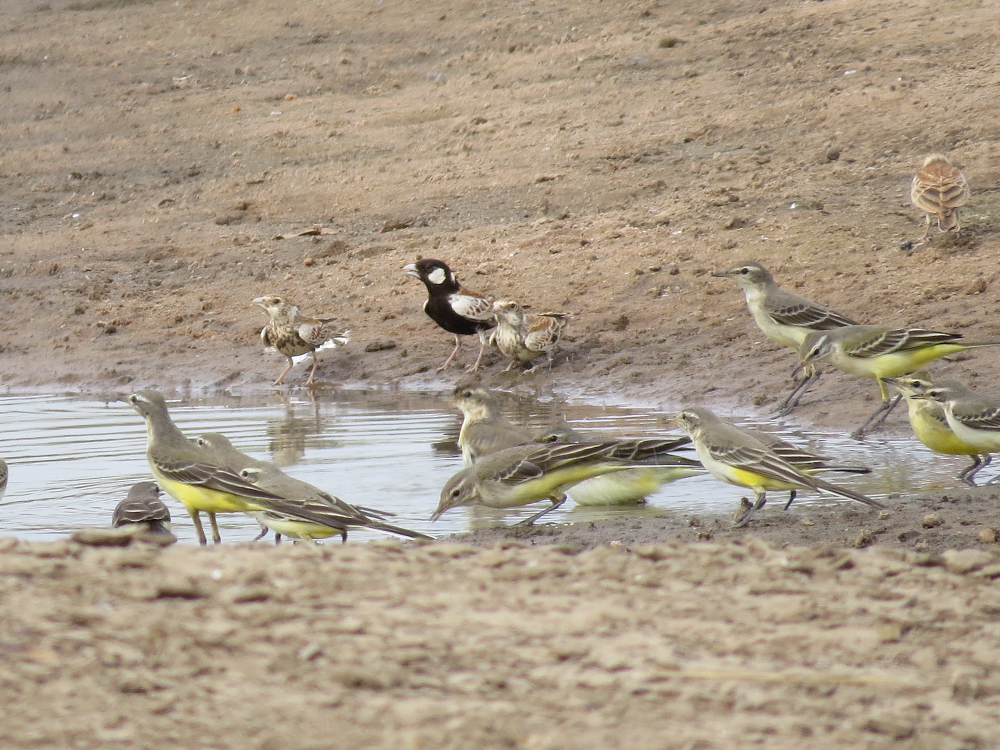
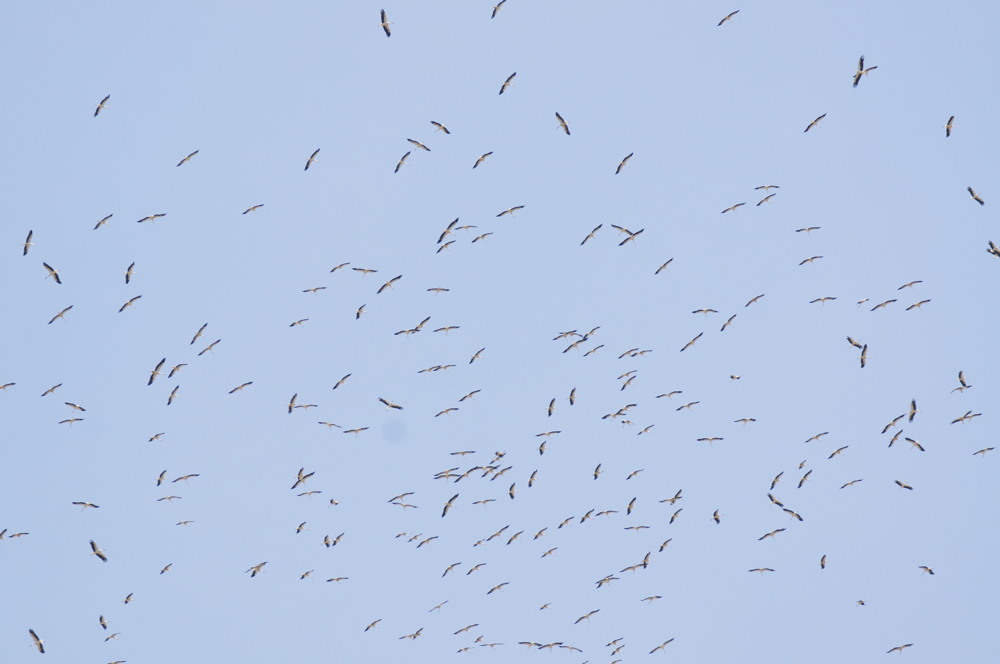

+254-722-339366
P.O. Box 1629-00606
Dear All,
Following the request for first dates in Kenya, I have received
several new reports and have incorporated them on an updated list that
is attached.
Although the rain did not happen here last night, there was an affect
somewhere on the migrants pushing the birds southwards.
This morning from 6.20am until 8.00am we had five overflying Eurasian
Rollers all singles except for one pair, and all low suggesting that
they may have been flying all night and were looking for somewhere to
come down. Four individual sightings over one small area suggests that
there was an unusual number of Rollers going over Nairobi.
One Eurasian Cuckoo was fairly high and heading SW. Thanks to
TanzaniaBirdAtlas I learnt yesterday about the Chinese Common Cuckoo
tracking scheme. A radio-affixed bird was tracked yesterday when
having left the Indian subcontinent it flew across the Indian Ocean
and late yesterday afternoon our time was due to make landfall on the
Kenya coast, if it continued it might have flown over Nairobi going
SW!!!!!
We have long accepted that Jacobin and Lesser Cuckoos do this
incredible flight but I never would have expected that birds from
China were also making this vast watercrossing only fuelled by a
handful of hairy caterpillars. I wonder what else makes this flight
that we are unaware of, there are many possibilities.
Other migrants going over were just one Eurasian Hobby (S), the usual
Eurasian Bee-eaters but they could just be local residents now, one
Common Swift going SE, two Eurasian Golden Orioles going E to the
Park, a few Barn Swallows also heading for the Park, and the strangest
a Eurasian Rock Thrush flying over low heading straight south. On the
ground were a dozen Willow Warblers, a Common Whitethroat that might
have been the one two days ago, a Spotted Flycatcher that has been
here for four days, although yesterday it had a friend, and at 11.00am
sitting in a leafless frangipani just outside of the window a Common
Nightingale.
The highlight however was the return of one of the Bat Hawks, having
not been seen since 23rd March.
Best to all
Brian

